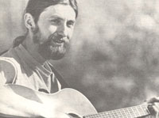

Even homesteaders need to relax and enjoy themselves from time to time, right? And almost everybody these days wants to cut his or her cost of living. So how about a little do-it-yourself entertainment?
And that's what this column is all about. Down-home music that you can make . . . and the instruments (which, in some cases, you can also make!) to play that music on.
The important thing is that this is your column. If you like it, write to me and let me know. If you have some ideas for this feature, let me know that. I'm open to any suggestions or information you care to contribute. I'll even try to answer your questions about down-home music . . . but-both for the benefit of all MOTHER's readers and to ease my correspondence load-I'll deal with those questions, whenever possible, here in this column . . . rather than in personal letters.
Address your correspondence for this column and this column only-to Marc Bristol, 18520 312th Ave. N.E., Duvall, Wash. 98019.
Have you ever wished someone would write a song that's more in tune with your personal feelings, beliefs, and interests than are the mass-produced ditties often heard on the radio? Do you think that your earth-conscious, back-to-the-land lifestyle could use a special "hymn" to inspire its continued existence? Well then, grab your guitar-or take a seat at the piano-and work up a song of your own! The fact is that you ought to consider composing a tune even if you've never tried it . . . because songwriting isn't really as difficult as it might seem. After all, anything that's part of your lifehow you feel, what you see, or someone you care for-is worth singing about!
All you need to start a songwriting "career" (besides the urge to express a particular feeling or idea) is some notion of how a song is structured. If you already play other people's tunes, you probably have a feel for the way music is put together . . . and novice musicians can obtain such understanding by simply learning a few songs all the way through.
As an aid to aspiring tunesmiths, I've prepared a list of some of the building blocks from which a song is constructed. Once you're familiar with the fundamentals, you can experiment with them-in countless ways-to create your own oneof-a-kind piece of music.
Lyrics, the words of a song, are usually divided into verses, a chorus (or refrain), and (sometimes) the bridge . . . which is a transitional section. If you have a specific thought or message to express, you'll probably need to write lyrics for your composition . . . but music can also communicate emotions quite effectively by its melody-the tune or series of notes that make up a song-alone.
The chord progression, on the other hand, is the underlying harmonic structure of the piece of music . . . or the series of chords, played by the accompanying instruments (such as guitar, piano, fiddle, or voices), which follows and supports the melody. Two other "essentials" of music are rhythm and tempo. The former term refers to the alternating pattern of strong and weak ac cents in a melodic line. In fact, harmony (which occurs when two or more notes are played together) is actually a rhythmic function, since two harmonious notes complement each other as a result of their similar rhythmic vibrations. Tempo is simply the rate of speed at which a song is performed.
Once you understand-and can com fortably work with-the fundamentals of music, you might wonder how to put them all together to make a song. Is it best, for instance, to come up with a chord progression first, or do the "pros" write the lyrics and then devise a melody to accommodate the words . . . or vice versa? Or do they wait for it all to come to them at once, in a blinding flash of genius?
Well, there's no one answer to such questions, since every musician has an individual approach to songwriting. I've developed most of my tunes by first writing the words and then setting them to music . . . but some of my best efforts came out all at once, while I was sitting around strumming my guitar and making up phrases as I went along. On the other hand, I know a number of folks who write all the music first, and then fit words to it. It's even common for artists to collaborate on songs: that is, one half of a team might write the lyrics, while his or her partner comes up with the melody . . . or maybe one person makes up one line and the other writes the next.
Although there are plenty of different chord progressions, rhythms, and fancy time signatures that you could experi ment with, I'd advise the novice songwriter not to worry about all that in the beginning. Your first important task is to find a key in which you can sing comfortably while accompanying yourself on your favorite instrument. As you experiment, you'll likely find several keys in which you enjoy playing . . . depending on the range of the particular melody you're working with. You'll also need to choose the key that best "mirrors" the message of the tune you're composing. (Minor keys are normally preferred for conveying sad, quiet emotions . . . while a major key is generally used for a happy, boisterous song.)
Contrary to what a lot of people think, a tune's key is not usually identical to the note the song starts on, but rather to that which it resolves into, or ends on. (Many songs modulate, or change key, in midflight . . . but such tricks are hardly essential, and primarily function as earcatchers.) Any key will offer you a wide selection of chords to use as building blocks for the melody . . . so it pays to knowfrom listening carefully to songs you're familiar with-which chords belong to which keys, and just how they work together.
Now that bit of self-education doesn't have to be as complicated as it might sound. In fact, many good American folk songs use no more than two chords! A good example is the wellknown "Polly Wolly Doodle": This popular ditty is in the key of C, but can be easily transposed to the key of G if the C and G chords in the traditional arrangement are replaced with G and D chords, respectively. The classic song also offers a demonstration of how many talented musicians-including Woody Guthrie-put their lyrics together: It's easy to make up new verses for the simple melody, by tacking on rhymed couplets with the appropriate number of syllables and ac cents in each line.
Beyond mastering and practicing the musical fundamentals of writing songs, I've found that it's important for a tunesmith to develop the proper frame of mind in order to come up with a worthwhile song. It's kind of like priming a pump: You have to train your mind to regard everything around you as potential material. For example, simply returning from a long trip once prompted me to compose a little number to express the strong emotion I always feel about coming home.
Most people who really enjoy songwriting, I've noticed, learn to maintain this "always on the lookout" attitude . . . and some of their tunes result from such constant "surveillance".
The point is that-in order to turn experiences and events into good songsyou have to learn to be observant. As you develop the ability to "see" things musically, you might want to exercise your ability-as I've already suggested-by making up verses to existing songs. Then, when you think you've got a really good idea for an original piece, don't be afraid to work on it. Just plunge ahead, and start trying out verses and melodies. The tune might come easily . . . and it might not. Either way, you'll be thrilled when you finally do produce a song, and then have it handy to "pull out of the bag" and sing whenever you want to communicate the particular feeling that it expresses.
As you work, bear in mind the goal of your song. Do you want to dance . . . or sing the young'uns to sleep? Do you need to heal a pain in your heart? Do you wish to recreate a heroic deed? Do you want to express your love for someone, or your fear of something? Focus on the purpose, and your song will likely flow more easily. As a rule, if you know what you want to say through your music, the details will come . . . through the strength of your desire to communicate and your perseverance at the task.
Even though your compositions might be intended only for the entertainment of family and friends (or even yourself alone), there may also come a time-as you gain confidence in your songwriting-when you'll decide to record an original tune or two. If so, you'll need some sort of protection for the piece . . . after all, you wouldn't want another musician to pick up your work and make a fortune from it while giving you no credit at all! Judging from my mail, it seems that the problem of possible theft is on a lot of folks' minds . . . so let me review the different ways a songwriter can publish and protect his or her compositions.
In theory, you own the legal rights to any song you compose as soon as it's committed to paper or preserved on tape or record. But you also need to register the song in some way, to make it officially yours. The most obvious way to do this-and the method you should use if you're sure your tune will be released to the public in recorded form-is to register it with the Library of Congress Office of Copyrights.
To do so, just fill out the correct form, which you can obtain free from the copyrights office . . . pay a $10 fee . . . and submit either a lead sheet (which shows the melody, indicates the chords, and spells out the lyrics) or a recorded version of the composition. Make sure any recordings you submit are very clear, and-if you're releasing the piece yourself-send two copies to the Office of Copyrights.
Should you have several tunes to register, you might want to avoid paying a separate registration fee for each one by publishing a whole collection of songs in a single volume, and registering them all under the book's title (another alternative is simply to string all the numbers together as a "suite"). Such a procedure is perfectly all right, but I recommend that each piece be registered under its own title if it's going to become a recorded release. In the case of printed copies, proper copyright notice must be affixed: for example, "Copyright©1981 by Marc Bristol. All rights reserved." (For published music, use the © symbol . . . and write © on all sound recordings.) If you want further information-or would like to obtain registration forms-write to the Register of Copyrights, Dept. TMEN, Library of Congress, Washington, D.C. 20559.
A less expensive form of registrationand one that's as yet untested in court, but apparently quite legal-can be obtained by way of the Songwriters' Resources Service. For a fee of $4.00 for one title and $1.00 for each subsequent title, the SRS will protect your songs until they're released for public sale . . . at which time you should officially register the tunes with the copyrights office. If you become a member of the organization (it'll cost you $30 a year to do so), you'll receive a 25% discount on your song registration. Write to: SRS, Dept. TMEN, 6381 Hollywood Boulevard. Suite 503, Hollywood, California 90028.
Why, you may wonder, should a person take the trouble to set his or her innermost thoughts and feelings to music and then offer 'em up for public consumption? Well, for one thing, it's impossible to predict the effect that one's songs may have on other folks. For instance, the Beatles demonstrated that a songwriter-or a group of musicians-can have a profound influence on society. In fact, when John Lennon died, even Radio Moscow played a 90-minute concert of his peace-promoting music!
In addition, I believe Arlo Guthrie's "Alice's Restaurant Massacree" was the single most influential antiwar protest, song written in recent years. And it's a sure bet that there're plenty of important causes nowadays to which we can devote our musical energies. In fact, many present-day folksingers are turning their attention-and their creativity-to the antinuclear movement.
However, the most important reason for writing music, in my opinion, is that it tends to bond us all to one another a and to the earth that sustains us. Songs-because they tend to become part of history -are cells in the lifeblood of our cultural tradition, and often come directlyfrom folks, like you and me, who try to share feelings and insights with their neighbors. Since lifestyles are changing almost daily, the older songs of our culture sometimes can't capture the particular outlook of the present generation. And finally, besides providing the opportunity to make an important social statement, homegrown tunes-with their emotional content-are just plain good medicine for the soul!
|
 |
|
|